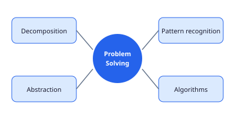
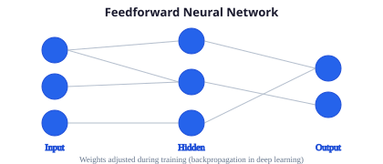

Information Technology
Class XII — Condensed Lecture Notes
Draft · SVG diagrams · MathJax · Flexbox layout · Aligned to uploaded curriculum PDFs
Contents
Unit 1 — Human–Computer Interaction (HCI) Unit 2 — Computational Thinking (Advanced) Unit 3 — Data Structures in Python Unit 4 — Data Analysis with Python Unit 5 — Machine Learning & Deep Learning Unit 6 — Entrepreneurship
Unit 1 — Human–Computer Interaction
Learning outcomes (summary)
Explain HCI fundamentals, UX/UI principles, and accessibility.
Analyse user needs; wireframe and prototype interfaces (e.g. Figma).
Test usability: efficiency, learnability, error rate, satisfaction.
1.1 Interaction paradigms
Traditional interaction — keyboard, mouse, windows/icons/menus/pointers (WIMP). Natural interaction — touch, voice, gesture, pen; reduces visible chrome but needs clear affordances.
HCI goal: systems that are useful, usable, and satisfying for target users in real contexts (school app vs public kiosk differ).
User
System
input
feedback
Figure 1.1 — User ↔ system feedback loop
1.2 Accessibility & inclusive design
Sufficient colour contrast; do not rely on colour alone.
Readable typography; scalable text; colour-blind-safe palettes.
Keyboard navigation and screen-reader labels for interactive controls.
1.3 Design process (Figma)
Personas & scenarios from stakeholder interviews.
Low-fidelity wireframes → interactive prototype.
Heuristic evaluation + user testing; iterate on findings.
Unit 2 — Computational Thinking (Advanced)
Learning outcomes (summary)
Apply stepwise reasoning and invariants to harder problems.
Analyse algorithm efficiency with Big-O notation.
Select appropriate strategies (divide-and-conquer, greedy where suitable).

Figure 2.1 — Problem-solving framework
2.1 Complexity sketch
If an algorithm performs \(3n^2 + 5n + 2\) operations, its growth is written \(O(n^2)\). Compare:
\[ O(1) < O(\log n) < O(n) < O(n \log n) < O(n^2) \]
2.2 Stepwise reasoning
Break invariants into preconditions, loop guard, and postconditions — e.g. binary search maintains “answer lies in index range [low, high]”.
Unit 3 — Data Structures in Python
Learning outcomes (summary)
Use lists, tuples, sets, dictionaries; choose structure by access pattern.
Implement stacks/queues conceptually; traverse nested structures.
3.1 Lists
Ordered, mutable sequences — indexing \(O(1)\), append amortized \(O(1)\), insert/delete in middle \(O(n)\).
scores = [88, 76, 91]
scores.append(84)
scores.sort()3.2 Dictionaries & sets
dict — key→value maps for fast lookup by key. set — unique elements; union/intersection for membership tests.
Structure Ordered? Mutable? Typical use
list Yes Yes Sequences, stacks (via append/pop) tuple Yes No Fixed records, dict keys set No Yes Unique tags, fast membership dict Insertion-ordered (Py3.7+) Yes Lookup tables, JSON-like data
Unit 4 — Data Analysis with Python
Learning outcomes (summary)
Connect to SQLite; run CRUD with Python sqlite3.
Load and analyse tabular data with pandas DataFrames.
Interpret basic aggregates, filtering, and simple visualizations.
4.1 Database connectivity
Components: driver/API, connection string, cursor, commit/rollback. SQLite stores a whole database in one file — ideal for classroom projects.
import sqlite3
conn = sqlite3.connect("school.db")
cur = conn.cursor()
cur.execute("CREATE TABLE IF NOT EXISTS student (id INTEGER PRIMARY KEY, name TEXT)")
conn.commit()
conn.close()4.2 pandas DataFrames
import pandas as pd
df = pd.read_csv("marks.csv")
print(df.describe())
passed = df[df["score"] >= 50]Cleaning steps: handle missing values, normalize column names, validate types before plotting.
Unit 5 — Machine Learning, Neural Networks & Deep Learning
Learning outcomes (summary)
Distinguish ML, neural networks, and deep learning.
Name components: neurons, layers, weights, activation, loss, optimizer.
Discuss training data, overfitting, and ethical deployment.

Figure 5.1 — Layers of a feedforward network
Machine learning — learn parameters from examples (supervised, unsupervised, reinforcement).
Neural network — connected units with non-linear activations; universal approximator in theory.
Deep learning — many hidden layers; excels at vision, speech, NLP when data and compute are sufficient.
Training minimizes loss \(L(\theta)\) over weights \(\theta\) using gradient descent variants:
\[ \theta \leftarrow \theta - \eta \,\nabla_{\theta} L(\theta) \]
Exam checklist: training vs inference; labelled data; validation split; bias/variance; never deploy without testing on representative users.
Unit 6 — Entrepreneurship
Learning outcomes (summary)
Differentiate entrepreneur vs entrepreneurship; spot opportunities.
Move from problem → idea → prototype → pitch.
Compare prototype fidelity: low / mid / high.
6.1 From problem to business idea
Validate pain points through interviews; define MVP scope; map stakeholders (customers, partners, regulators).
6.2 Prototype types
Fidelity Form Purpose
Low Paper sketches, storyboards Explore many concepts cheaply Mid Clickable wireframes (Figma) Test flows with users High Working subset with real data Pilot deployment, investor demo
6.3 Business model canvas (one slide)
Value proposition
Customer segments
Channels
Revenue & costs
Class XII IT Lecture Notes (draft)
End of document